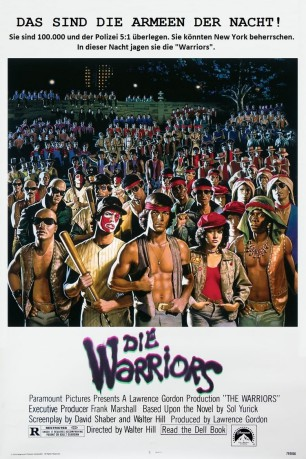
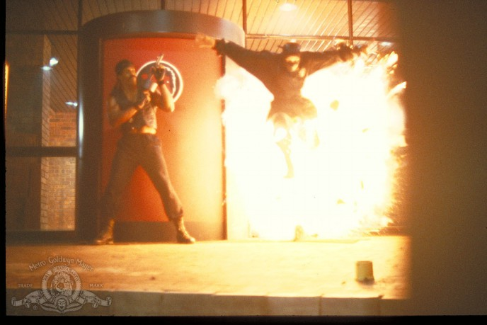
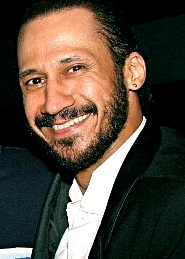

#9844 Die Warriors
Alternativ: The Warriors
 
 IMDB-Wertung: 7.7 / 10
IMDB-Wertung: 7.7 / 10  Metascore: 65
Metascore: 65 
Die Warriors, so nennt sich eine gefährliche Gang, die in den Häuserschluchten von New York sein Unwesen treibt. Zwischen den verschieden Clans in der Stadt herrscht ein wahrer Territorial-Krieg um jeden Zentimeter Raum. Eines Tages wird zwischen den Gangs ein Waffenstillstand ausgehandelt, doch als dann Anführer Cyrus auf hinterhältige Weise ermordet wird, fällt der Verdacht schnell auf Mitglieder der Warriors und es droht ein schrecklicher Krieg, der alles Leben in New York zerstören würde. Die anderen Clans schließen sich zusammen und beginnen die verstreuten Mitglieder der Warriors zu jagen. Swan der Anführer der gejagten Bande, muss einen Weg finden, um sich und seine Leute sicher nach Coney Island zu bringen, der einzige Ort in New York, an dem sie sich relativ sicher fühlen können. Doch wie sollen sie einen Weg durch die tausenden von brutalen Schlägern finden, die überall in der Stadt nach ihnen suchen?
Jahr: 1979
Dauer: 92 Minuten
FSK: 12
Land: USA Studio: Paramount A Gulf+Western CompanyTonspuren:
Untertitel:
Auflösung: 1080p (1920x1080) Größe: 7833 MB
Genre: Action, Thriller, Krimi
Regisseur:  Walter Hill
Walter Hill
Drehbuch: Sol Yurick, David Shaber, Walter Hill
Soundtrack: Barry De Vorzon
Darsteller:
- Michael Beck als Swan
 James Remar als Ajax
James Remar als Ajax- Dorsey Wright als Cleon
- Brian Tyler als Snow
- David Harris als Cochise
- Tom McKitterick als Cowboy
- Marcelino Sánchez als Rembrandt
- Terry Michos als Vermin
- Deborah Van Valkenburgh als Mercy
- Roger Hill als Cyrus
 David Patrick Kelly als Luther
David Patrick Kelly als Luther- Lynne Thigpen als D.J.
- Ginny Ortiz als Candy Store Girl
 Mercedes Ruehl als Policewoman
Mercedes Ruehl als Policewoman John Snyder als Gas Station Man
John Snyder als Gas Station Man- Dennis Gregory als Masai
- George Lee Miles als Gramercy Riff
- Joel Weiss als Rogue
- Paul Greco als Orphan
- Apache Ramos als Orphan
-  Steve James als Baseball Fury
- Lisa Maurer als Lizzie
- Kate Klugman als Lizzie
- Dee Dee Benrey als Lizzie
- Iris Klein als Lizzie
- Craig R. Baxley als Punk
- Konrad Sheehan als Punk
 Tommy J. Huff als Punk
Tommy J. Huff als Punk Irwin Keyes als Police
Irwin Keyes als Police Sonny Landham als Police
Sonny Landham als Police Frank Ferrara als Police
Frank Ferrara als Police- Richard Alleman als Nazi (uncredited)
 Anton Evangelista als Stevedore Gang Member (uncredited)
Anton Evangelista als Stevedore Gang Member (uncredited)- Glenn Farrington als Baseball Fury (uncredited)
- Steve Garfanti als Gang Member (uncredited)
- Mark Richard Goldman als Hulk (uncredited)
- Robert Dominick Jones als Baseball Fury (uncredited)
-  Antone Pagán als Gang Leader on Subway Stairs (uncredited)
- Barry Shay als Gang Member (uncredited)
- Jim Templar als Punk (uncredited)
- Robert Townsend als Baseball Fury (uncredited)
- Thomas G. Waites als Fox (uncredited)
 Debra Winger als Girl on Subway (uncredited)
Debra Winger als Girl on Subway (uncredited)- Gwynn Press als Prom Couple
- Jodi Price als Prom Couple
- Jeffrey Scott als Prom Couple
- Carl Brown als Prom Couple
- Edward Sewer als Gramercy Riff
- Ron Ferrell als Gramercy Riff
- Fernando Castillo als Gramercy Riff
Datei: X:\1979\Warriors, Die (1979, FSK12, 1920x1080).mkv seit 02.11.2018
Festplatte: HD 1971-1979
 Es gibt insgesamt 29 Filme in der Gruppe '1979'
Es gibt insgesamt 29 Filme in der Gruppe '1979'